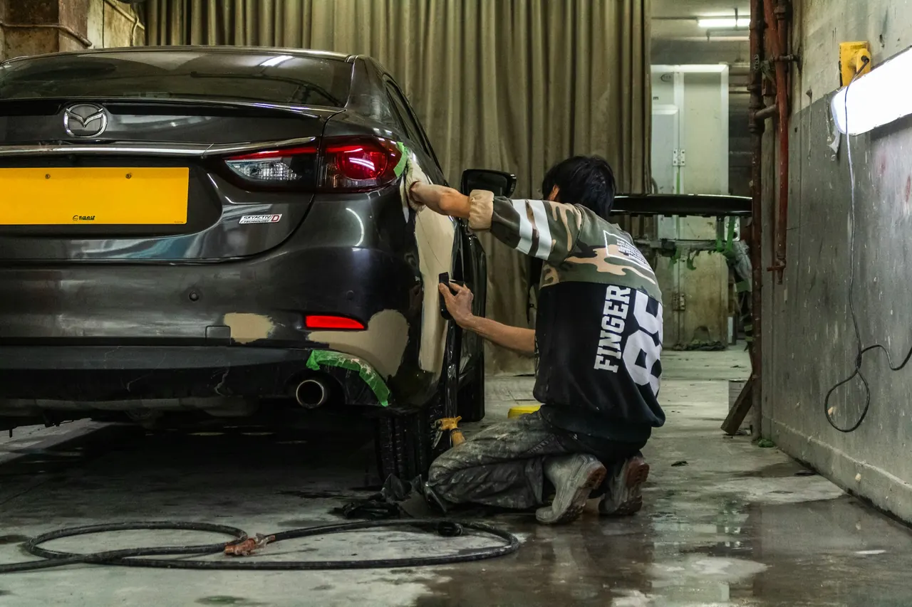
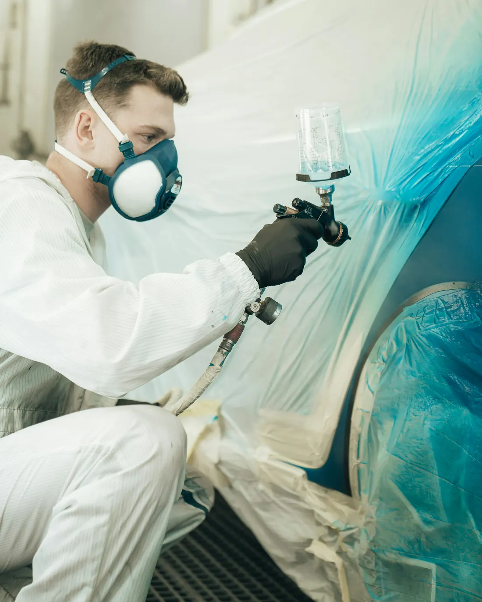
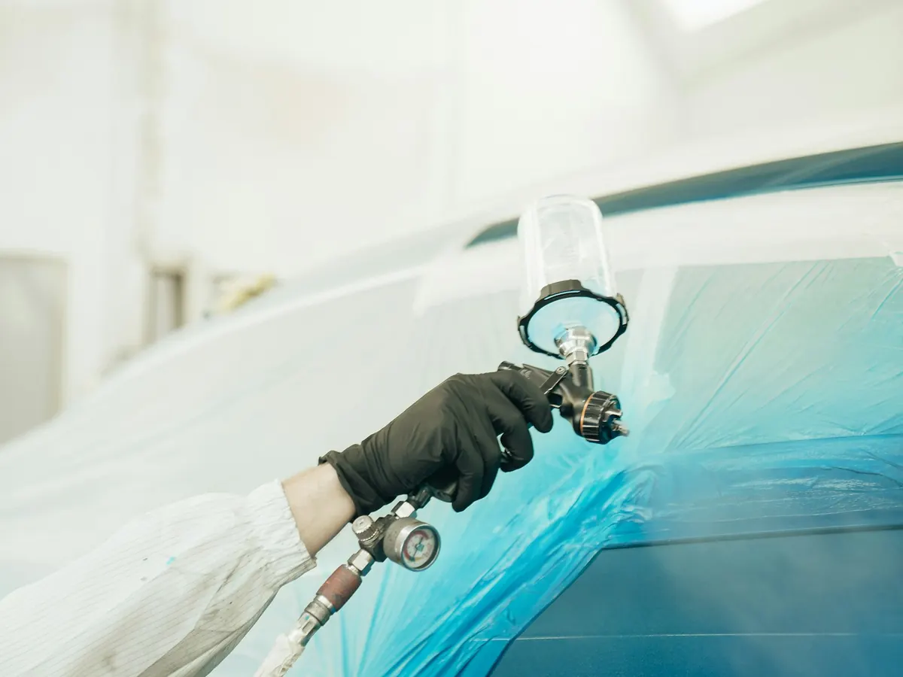
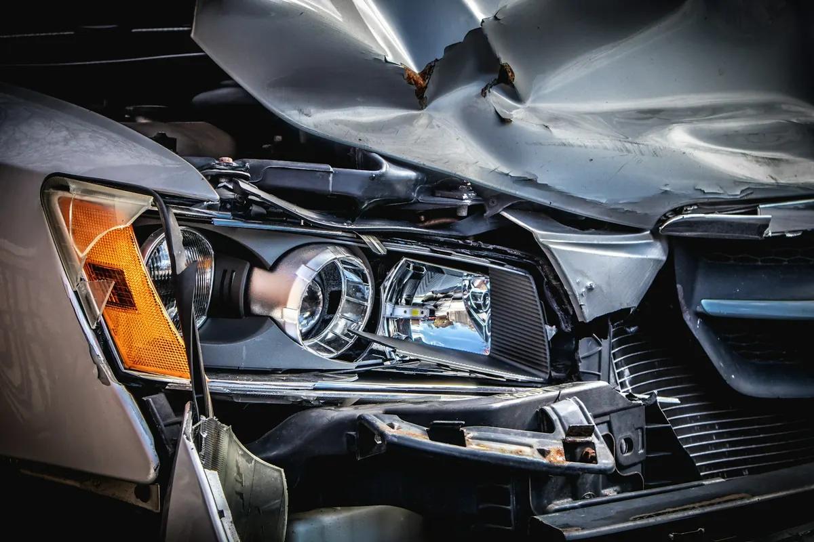
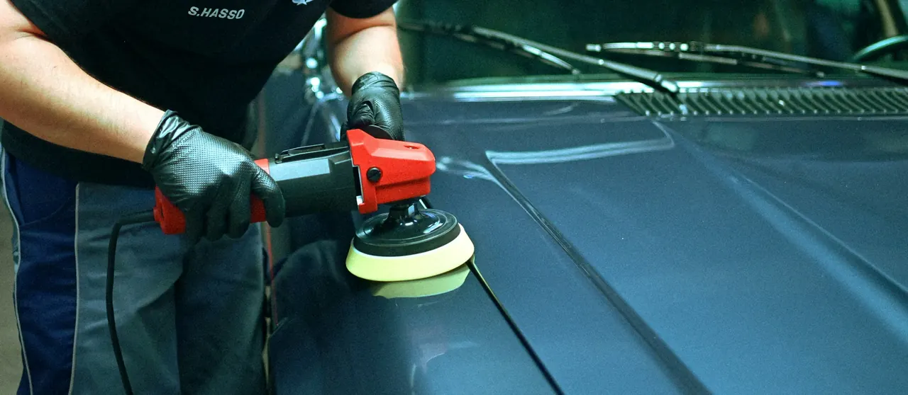

Karosszériajavítás
Márkafüggetlen karosszériajavítás: horpadás, sérült elemek javítása vagy cseréje.
Márkafüggetlen karosszériajavítás, autófényezés és teljes körű biztosítási ügyintézés – több mint 30 év tapasztalattal, az Álmos utcai műhelyben.

Biztosítós kárnál a papírmunkát mi visszük. Válassza ki, milyen kárról van szó: megmutatjuk, mit érdemes előkészíteni, és munkaidőben visszahívjuk.
Válassza ki az űrlapon a kár típusát, és itt megmutatjuk, mit érdemes előkészíteni.
Karambolos javítástól a polírozásig – márkafüggetlenül, egy műhelyben.

Márkafüggetlen karosszériajavítás: horpadás, sérült elemek javítása vagy cseréje.

Teljes és részleges fényezés, a gyári szín pontos keverésével – a nehéz, többrétegű színekre is.

Teljes körű biztosítási ügyintézés: a biztosítóval a kapcsolatot mi tartjuk.

Gépi polírozás a fényezés után vagy a megfakult, karcos lakk felfrissítésére.
Az ügyfelek a Google-on leginkább ezt emelik ki: a fényezés olyan, mintha gyárilag jött volna.
Zseni munkát végeztek.
Egy Mazda híresen nehéz „soul red” színén.
Ár-érték arányban egyértelműen ti bizonyultatok a legjobbnak.
Öt pécsi karosszérialakatos közül választott; a gyöngyházfehér metál hibátlan lett.
Amilyen munkát kiadnak a kezük közül, az valami bámulatos!
Pécsen, az Álmos utca 3. alatt dolgozunk. Több mint 30 év tapasztalattal javítunk karambolos és sérült autókat, bármilyen márkát.
Márkafüggetlenül vállalunk karosszériajavítást és autófényezést, bármilyen márkájú személyautóra.
Igen, teljes körű biztosítási ügyintézést vállalunk: karambolos javításnál a biztosítóval a kapcsolattartást is mi végezzük.
Kérjen visszahívást az oldal űrlapján, vagy hívjon minket a +36 30 957 8258-as számon. A pontos ajánlathoz az autót a műhelyben megnézzük.
A javítás ideje a sérülés mértékétől és az alkatrészektől függ; a felmérés után megmondjuk, mikorra készül el az autó.
Hétfőtől péntekig 8:00–12:00 és 13:00–16:30 között, hétvégén zárva.
Pécs, Álmos utca 3. – a műhelyben várjuk.